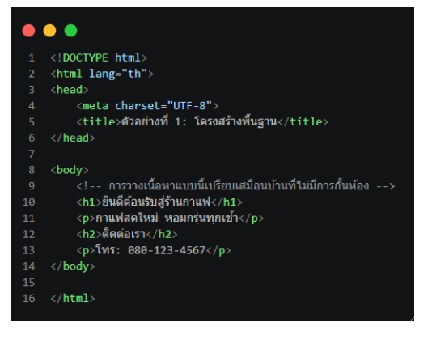
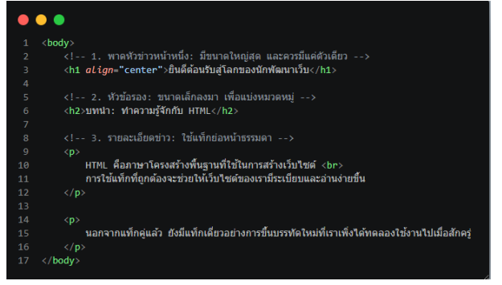

1. พื้นฐานภาษา HTML5 และโครงสร้างไฟล์มาตรฐาน
ภาษา HTML5 ทำหน้าที่เป็นโครงสร้างหลักของหน้าเว็บ (เปรียบเหมือนเสาเข็มและผนังบ้าน) เวอร์ชันนี้รองรับมัลติมีเดีย (วิดีโอ/เสียง) ได้ในตัว และมี Semantic Tags (แท็กสื่อความหมาย) ที่ช่วยเรื่อง SEO และผู้พิการทางสายตา โครงสร้างพื้นฐาน 3 ส่วนหลัก:
<!DOCTYPE html>และ<html>: ประกาศมาตรฐาน HTML5 ที่บรรทัดแรกสุด และใช้แท็ก<html>ครอบคลุมเนื้อหาเว็บทั้งหมด<head>และ<title>: ส่วนควบคุมหลังบ้าน (ไม่แสดงบนหน้าจอ) ใช้เก็บข้อมูลเทคนิค และมีแท็ก<title>สำหรับแสดงชื่อบนแท็บของเบราว์เซอร์<body>: พื้นที่เนื้อหาหลัก ส่วนที่แสดงผลให้ผู้ใช้งานมองเห็นและโต้ตอบได้ เช่น ข้อความ รูปภาพ หรือปุ่มกด- การแบ่งสัดส่วนเนื้อหา: ใช้แท็กทั่วไปอย่าง
divในการแบ่งกลุ่มข้อความ (เปรียบเหมือนฉากกั้นห้อง) หรือเปลี่ยนมาใช้แท็กที่มีความหมายของ HTML5 เช่นheader,main,footerเพื่อความเป็นมืออาชีพและดีต่อระบบค้นหา

2. การใช้งาน Tag และ Attribute จัดการข้อความ
- Tag & Attribute: แท็กคือคำสั่งควบคุมที่มักมาเป็นคู่ (แท็กเปิด-แท็กปิด) ส่วนแอตทริบิวต์คือคุณสมบัติเสริมที่เติมในแท็กเปิดเพื่อระบุรายละเอียดเฉพาะเจาะจง
- Heading (h1 ถึง h6): แท็กพาดหัวแบ่งตามลำดับความสำคัญ โดย h1 สำคัญที่สุดและควรมีเพียงตัวเดียวในแต่ละหน้าเว็บเพื่อผลดีต่อ SEO
- Paragraph (p): ใช้จัดกลุ่มข้อความยาวๆ เป็นย่อหน้า โดยเบราว์เซอร์จะเว้นระยะห่างบน-ล่างให้อัตโนมัติ
- Line Break (br): แท็กเดี่ยวที่ใช้บังคับขึ้นบรรทัดใหม่ เนื่องจากการกด Enter ในโปรแกรมเขียนโค้ดจะไม่แสดงผลบนหน้าเว็บจริง

3. การสร้างรายการข้อมูล (Lists)
การใช้แท็กรายการช่วยจัดข้อมูลให้เป็นระเบียบ อ่านง่าย และส่งเสริมการทำ Semantic HTML แบ่งเป็น 3 รูปแบบหลัก:
- รายการแบบไม่มีลำดับ (ul): เหมาะกับข้อมูลที่สลับลำดับได้ แสดงผลเริ่มต้นเป็นจุดวงกลมทึบสีดำ (Disc) โดยมีแท็ก
liครอบข้อมูลย่อยแต่ละข้อ - รายการแบบมีลำดับ (ol): เหมาะกับข้อมูลที่สลับขั้นตอนไม่ได้ เบราว์เซอร์จะรันตัวเลขให้อัตโนมัติ และมีแอตทริบิวต์เสริม เช่น
type,start,reversed - รายการแบบซ้อนทับกัน (Nested Lists): การนำรายการย่อยไปซ้อนไว้ ภายในแท็ก
liของรายการหลัก เพื่อสร้างหมวดหมู่ย่อย
4. การตั้งค่าและใช้งานส่วนขยาย (Extensions) ใน VS Code
- วิธีเลือกติดตั้งอย่างปลอดภัย: สังเกตเครื่องหมายติ๊กถูก (Verified Publisher) และยอดดาวน์โหลดที่ควรมีหลักล้านขึ้นไป
- Prettier: จัดย่อหน้าและเว้นวรรคโค้ดให้อัตโนมัติเมื่อกดบันทึก
- Error Lens: แจ้งเตือนข้อผิดพลาดและบั๊กสีแดง/เหลืองที่ท้ายบรรทัดทันทีที่พิมพ์ผิด
- Auto Rename Tag: เปลี่ยนชื่อแท็กปิดให้อัตโนมัติเมื่อเราแก้ไขแท็กเปิด
- Auto Close Tag: เติมแท็กปิดให้ทันทีเมื่อพิมพ์แท็กเปิดเสร็จ
- Live Server: ส่วนขยายที่ช่วยจำลองคอมพิวเตอร์ให้เป็น Local Server (HTTP Protocol) แทนการเปิดไฟล์ตรงๆ (File Protocol) ทำให้หน้าจอแสดงผลอัปเดตแบบ Realtime และสามารถทดสอบฟังก์ชันขั้นสูงได้อย่างแม่นยำเหมือนบนอินเทอร์เน็ตจริง